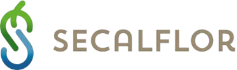

Das patentierte, biozertifizierte Speicherpanel. Ursprünglich für die Renaturierung großer Bergbaureviere entwickelt — heute Grundlage unserer Gründach- und Schwammstadt-Projekte.
Auf der Suche nach dem bestmöglichen Angebot sind wir auf ein höchst außergewöhnliches Produkt gestoßen, das ursprünglich für die Renaturierung großer Bergbaureviere erfunden wurde.
Die von SECALFLOR in jahrelanger Forschung entwickelten patentierten, biozertifizierten, nur aus natürlichen Rohstoffen bestehenden Speicherpanels sind die Grundlage für ein einzigartiges Begrünungssystem — einsetzbar überall dort, wo optimale Wachstumsbedingungen geschaffen werden sollen.
Bei außergewöhnlich geringem Gewicht weisen die Panels ein hervorragendes Wasser- und Nährstoffspeichervermögen auf — und machen Kunststoff-Retentionselemente überflüssig.


Nach dem ersten Kontakt zwischen den beiden Firmen hat sich in den letzten Jahren eine stabile und vertrauensvolle Zusammenarbeit entwickelt. Auf dieser Basis haben wir die Zusammenarbeit in eine enge Partnerschaft überführt.
Ziel: die besonderen Eigenschaften des Produktes mit einer umfassenden Unterstützung bei der Realisierung von Begrünungsprojekten — auf dem Dach wie am Boden — aus einer Hand anzubieten.
Von der ersten Idee bis zur erfolgreichen Realisierung. Inklusive Prüfung von Kosteneinsparpotentialen, Gegenfinanzierungseffekten und Fördermitteln.
Eine win-win-Situation zum Wohle der Kunden beider Firmen.